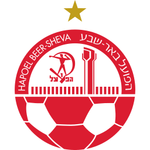

מכבי חיפה
:
הניחוש שלך

הפועל ב״ש
עוד לא ניחשת
ננעל בשריקת הפתיחה
כרטיס אחד לכל החיים של משחק: מנחשים, נועלים, עוקבים בשידור חי, מקבלים נקודות.
ניקוד: בול 10 · בכיוון 5 · בכיוון עם הפרש מדויק 6 · כיוון תיקו (לא מדויק) 6 · פספוס 0

הפועל ב״ש הפועל ת״א
הפועל ת״א מכבי ת״א
מכבי ת״א הפועל פ״ת
הפועל פ״ת בית״ר י־םעוד גול להפועל פ״ת2:0בול +10
בית״ר י־םעוד גול להפועל פ״ת2:0בול +10 הפועל י־ם
הפועל י־ם מכבי נתניההפועל ת״אמכבי ת״אהפועל פ״תבית״ר י־םהפועל י־םמכבי נתניה
מכבי נתניההפועל ת״אמכבי ת״אהפועל פ״תבית״ר י־םהפועל י־םמכבי נתניה